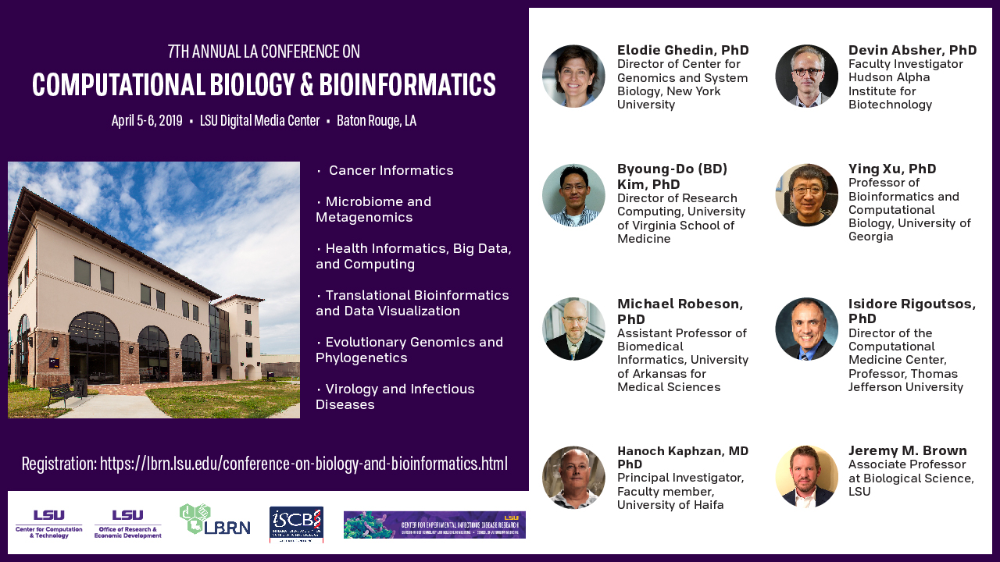
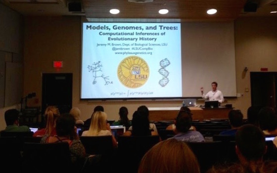
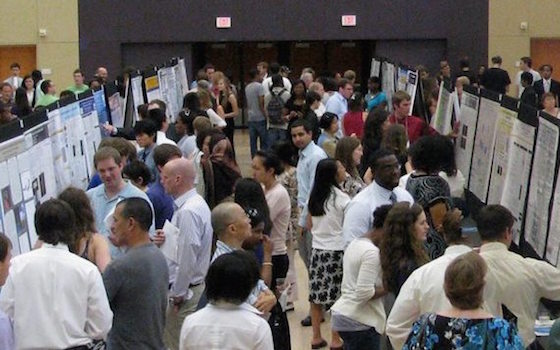
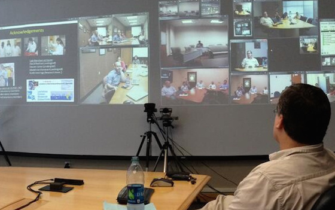

Annual Meetings
Each year the LBRN program has an annual meeting in which program participants from PUI campuses, summer program, committee members and administrators meet to review individual research accomplishments and to discuss the overall program activity.
view more

Conference on Computational Biology & Bioinformatics
Each year, LBRN, CCT, COBRE, and ORED, programs host a one and a half day bioinformatics conference where we invite researchers, faculty, graduate and undergraduate students to attend.
view more

Training Workshops
LBRN Cores host various one or two day workshops throughout the year where researchers, faculty, graduate and undergraduate students are invited to attend. Topics range from computational bioinformatics to protein purification, etc.
view more

LSU Computational Biology Seminar Series
Sponsored by the LSU College of Science, the Department of Biological Sciences, the Center for Computation & Technology and the Louisiana Biomedical Research Network these monthly seminars increase student awareness of the importance of computational approaches to modern biology research.
view more

LSU Summer Undergrad Research Forum
The Annual Summer Undergraduate Research Forum (SURF) showcases the numerous undergraduate students who have engaged in summer research projects this year at institutions throughout the LSU System. Morning talks to the undergraduates by graduate students, post docs, and junior researchers precede the forum event.
view more

LBRN Works-In-Progress
The Work In Progress Seminars are presentations by LBRN Project Investigators where they present their research progress and have an opportunity for input from their peers and mentors in a collaborative setting.
view more